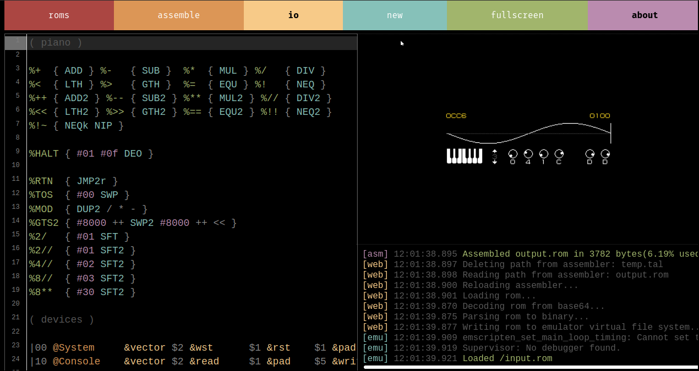

uxn

The Uxn ecosystem is a personal computing playground, created to host small tools and games, programmable in its own unique assembly language.
It was designed with an implementation-first mindset with a focus on creating portable graphical applications, the distribution of Uxn projects is akin to sharing game roms for any classic console emulator.
We've already ported orca, nasu, left and noodle to uxn-compatible ROMs. Each one is written in a special flavor of assembly designed specifically for the Uxn computer. To learn more, see the technical documentation.
Design
Because Uxn was explicitly created to exist as software hosted on pre-existing hardware, the design was advised primarily by relative software complexity, not by how fast it could be made to run. Features were weighted against the relative difficulty they would add for programmers implementing their own emulators.
Stack-machines, and postfix arithmetic, are ideal candidates for this scale of personal computing. Not only does it make for extremely basic compilers, the resulting programs are succinct and translate well to pen & paper computing.
With only 64kb of memory, it will never run Chrome, TensorFlow or a blockchain. It sucks at doing most modern computing, but it’s also sort of the point, it's more about finding what new things could be made in such a small system.
What's the benefit of Uxn over C, when just about everything has a C compiler?
While terminal utilities can be made portable, cross-platform graphical development is different. Even building projects for platforms with C compilers, such as Linux and Plan 9, will require a near total rewrite, whereas porting the thin layer that is the uxn emulator will allow that same rom file to be used on both systems.
uxn guide
uxn is a portable virtual machine, meaning that its programs are designed especially to be working on different consoles and devices.
The same Uxn program can be used on a on a desktop computer, in a browser, on tiny electronics, and on modern electronics without having to do any changes to the code.
- Uxn Desktop Versions
- Install Uxn Linux
- Install Uxn OS X
- Install Uxn Windows
- Web version
- Versions for other systems
- ROMs
- Emulator controls
- Need a hand?
Uxn Desktop Versions
This guide will focus on getting you started with the Uxn emulator for desktop computers.
To run it locally, you'll need an emulator for your OS. Then, you'll be able to load ROMs into your emulator to play games, write, make music, or draw.
There are two packages of the emulator to choose from:
- A standalone emulator (if you want to pick and choose ROMs)
- The emulator packaged with some starter ROMs (see list of starter ROMs below)
The version with starter ROMs includes (if you are just starting out, we recommend downloading this package):
- A calculator
- Catclock (a desktop clock utility)
- Dexe (hex editor)
- donsol (game)
- left (writing tool)
- nasu (sprite editor)
- noodle (sketch tool)
- orca (livecoding tool)
- A Piano (piano toy)
- Turye (font editor)
Linux

The Linux desktop emulator requires SDL2. If you don't have it here's how to get it:
sudo pacman -Sy sdl2 # Arch sudo apt install libsdl2-dev # Ubuntu sudo xbps-install SDL2-devel # Void Linux
Next, download the standalone emulator, or a version including starter ROMs.
DOWNLOAD LINUX EMULATOR
Linux Emulator [28.8 kB] Linux Emulator + ROMs [58.7 kB]LAUNCH LINUX EMULATOR
Build the emulator by running the build.sh script. The emulator(uxnemu) are created in the ./bin folder.
./build.sh
Double-click on uxnemu to launch it.
If for whatever reason uxnemu is not be clickable, navigate to folder where you placed uxnemu and in the terminal window and launch it from there:
./uxnemu
OS X
The OS X desktop emulator requires SDL2. If you don't have it here's how to get it:
brew install sdl2
Build the emulator by running the build.sh script. The emulator(uxnemu) will be created in the ./bin folder:
./build.sh
Next, download the standalone emulator, or a version including starter ROMs.
DOWNLOAD OS X EMULATOR
OS X Emulator [469.3 kB] OS X Emulator + ROMs [498.8 kB]To build from source, follow this guide by Eli_oat. Also, if you're interested in creating a desktop launcher for the applications, check out this tutorial by TenDigits.
Windows

Download the standalone emulator, or a version including starter ROMs.
DOWNLOAD WINDOWS EMULATOR
Windows Emulator [57.3 kB] Windows Emulator + ROMs [60.6 kB]Web version
If you quickly want to try Uxn, you can load a rom directly in your browser by using the web version of Uxn.
Versions for other systems

Uxn can run on classic consoles, on tiny electronics and modern electronics.
Currently, there are ports(not all are complete) for GBA, Nintendo DS, Playdate, DOS, PS Vita, Raspberri Pi Pico, Teletype, ESP32, iOS, STM32, STM32duine, IBM PC etc.
See the full list of emulators.
ROMs
The Uxn package with starter applications offers many ROM options, but are many more to try, view the full list of available applications.
HOW TO LAUNCH ROMs:

There are many ways to launch ROMs:
- Via the Uxn launcher (preview image above)
- By dragging .rom files onto the emulator window
- Via the terminal (see instructions below)
Lauching a ROM from the terminal
To launch the ROM from the terminal, point the emulator to the target .rom file:
bin/uxnemu bin/example.rom
Uxnemu is the name of the emulator. Then, it's possible to launch the ROM from wherever:
uxnemu bin/example.rom
Emulator Controls
F1toggle zoomF2toggle debuggerF3take screenshotF4load launcher.rom
Buttons
- L-CTRL A
- L-ALT B
- L-SHIFT SEL
- HOME START
Need a hand?
The following resources are a good place to start:
- AwesomeUXN list
- Uxntal(XXIIVV)
- Uxntal cheatsheet(XXIIVV)
- Uxntal reference(XXIIVV)
- Uxn tutorial(Compudanzas)
You can also find us in #uxn on irc.esper.net.
Why create a smol virtual computer?

We want to produce lasting versions of our tools and games, and by using simpler systems(the UxnVM is about 200 lines of C) we can build more resilient software due to their lack of dependencies, and support older hardware when possible. The Uxn emulator is extremely simple, and can be ported to an unsupported system quickly. Try Uxn on NintendoDS, Gameboy Advance, Rasperry Pi Pico or on desktop.
As it stands today, modern software is built with extreme short-sightedness, designed to be run on disposable electronics and near impossible to maintain, so we decided to not participate in this race to the bottom. Our aim is to create a machine that focuses on answering the handful of tasks we need, which is centered around building playful audio/visual experiences.
To borrow the words of Viznut Heikkilä on permacomputing, we're interested in cultural and ecological permanence. "That is, how to give computers a meaningful and sustainable place in a human civilization that has a meaningful and sustainable place in the planetary biosphere".
story
Back in 2016 when first operating on a sailboat, we experienced frequent failures with both software & hardware, largely due to our small energy storage and lack of reliable connectivity. The solution was to create tools that would be better suited to our needs. The objective was to replace the bloated, closed-source or subscription software that we were using to do creative work, such as Photoshop, Xcode and Ableton. We were somewhat familiar with web technologies, so we decided to build our programs on this new framework called Electron.
While solving some of our issues, Electron was rapidly increasing in size and soon joined the rest of the software that we wanted to do away with. Our focus shifted toward reducing our energy use, and to ensure reliability by removing all dependencies.
To transition toward our new goals, we developed offline web versions as temporary stand-ins while researching ways to build more resilient software. We eventually ported our tools to C, but while we had achieved ideal energy usage, portability was still an issue, so we kept looking. We learnt 6502 assembly, seeing players run our NES game on all these different platforms gave us a new idea.
And so, in 2021 we took our biggest leap yet toward longtermism and designed a small virtual machine with a focus on implementability; meaning that moving forward, our software will live on a virtual machine. In other words, the code will stop having to be ported, but instead to make something available on a new platform would our needs or devices change, the emulator remains the only piece of code to be ported, which is explicitly designed to be easily implemented.
This is where we are now. uxn may solve our cross-platform issues, while being extremely light. It took us a long while to get here, we hope that one day the Uxn versions of our software replace the desktop and web versions [16.05.21].
Go slow, and fix things.
Uxn is currently under development, we use #uxn on irc.esper.net to coordinate development [07-05-21].